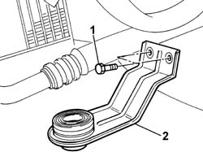
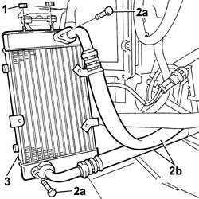

1084C34 Engine oil cooling radiator - R.R.
- Path
- Procedures > 10 ENGINE > 1084 ENGINE LUBRICATION > 1084C ENGINE OIL COOLING CIRCUIT > 1084C34 Engine oil cooling radiator - R.R.
- Kind
- repair procedure (removal / refitting; the operation number is the code)
- Applies to
- engines: 2.4 JTD 20V; all production periods
- Interactive page
- https://sloeber94.github.io/elrnDB-lThss/en/#/851230
Applies to: engines: 2.4 JTD 20V; all production periods
 Removing
Removing
 Refitting
Refitting- Position the vehicle on a lift.
- Open the boot and disconnect the negative battery terminal.
See in Op. 4450B02 Left FRONT WHEEL (one) - R.R.
See in Op. 7055B64 Engine compartment DUST SEAL in front wheel arch (one), left or right - R.R.
See in Op. 1084C32 Engine oil radiator cooling FAN - R.R.
1. Undo the retaining bolts.
- Release the bracket from the engine oil radiator support pin.
2. Remove the engine oil cooling radiator bracket.

Applies to: engines: 2.4 JTD 20V; all production periods
- Position a container to collect the oil that emerges from the oil radiator.
1. Undo the upper retaining nuts.
2. Undo bolts (2a) and disconnect the engine oil delivery and return pipes from the radiator (2b).
3. Remove the engine oil cooling radiator with shroud.
- Separate the engine oil cooling radiator from the shroud at the bench.

Applies to: engines: 2.4 JTD 20V; all production periods
Refitting
Removing- Fit the engine oil cooling radiator to the shroud.
- Fit the engine oil cooling radiator and tighten the upper bolts.
- Replace the seals on both pipes and connect to the engine oil cooling radiator.
- Secure the pipe and tighten the bolts to the radiator.
- Fit the lower engine oil cooling radiator bracket and tighten the fixing bolts.
See in Op. 1084C32 Engine oil radiator cooling FAN - R.R.
See in Op. 7055B64 Engine compartment DUST SEAL in front wheel arch (one), left or right - R.R.
See in Op. 4450B02 Left FRONT WHEEL (one) - R.R.
- Check the lubrication system level and top up if necessary as described in the specific operation:
See in Op. 0010T11 ENGINE OIL - Check level and top up if necessary
- Connect the negative battery terminal.
- Remove the vehicle from the lift.